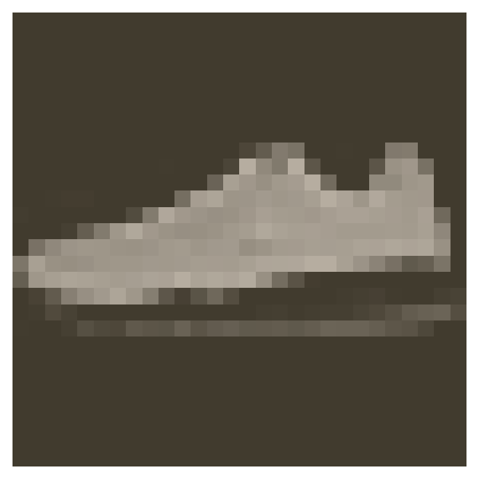

Part 6 - Saving and Loading Models
Table of Contents
Introduction
This is from Udacity's Deep Learning Repository which supports their Deep Learning Nanodegree.
In this notebook we're going to look at how to save and load models with PyTorch.
Set Up
Imports
Python
from pathlib import Path
PyPi
from dotenv import load_dotenv
import matplotlib.pyplot as pyplot
import seaborn
import torch
from torch import nn
from torch import optim
import torch.nn.functional as F
from torchvision import datasets, transforms
Nano Program
from nano.pytorch import helper
This Project
from neurotic.tangles.data_paths import DataPathTwo
from fashion import (
label_decoder,
train,
DropoutModel,
HyperParameters)
Plotting
get_python().run_line_magic('matplotlib', 'inline')
get_python().run_line_magic('config', "InlineBackend.figure_format = 'retina'")
seaborn.set(style="whitegrid",
rc={"axes.grid": False,
"font.family": ["sans-serif"],
"font.sans-serif": ["Latin Modern Sans", "Lato"],
"figure.figsize": (8, 6)},
font_scale=1)
The Data
Once again we're going to use the fashion-MNIST data.
The Path
path = DataPathTwo(folder_key="FASHION_MNIST")
print(path.folder)
~/datasets/F_MNIST
Define a transform to normalize the data
transform = transforms.Compose([transforms.ToTensor(),
transforms.Normalize((0.5, 0.5, 0.5), (0.5, 0.5, 0.5))])
Download and Load the Training Data
trainset = datasets.FashionMNIST(path.folder, download=True, train=True,
transform=transform)
training = torch.utils.data.DataLoader(trainset, batch_size=64,
shuffle=True)
Download and Load the Test Data
testset = datasets.FashionMNIST(path.folder, download=True, train=False,
transform=transform)
testing = torch.utils.data.DataLoader(testset, batch_size=64, shuffle=True)
Here's one of the images.
/home/brunhilde/.virtualenvs/In-Too-Deep/bin/python3: No module named virtualfishimage, label = next(iter(trainloader))
helper.imshow(image[0,:]);

print(label_decoder[label[0].item()])
Sneaker
Training the Network
I'm re-using the DropoutModel from the previous lesson about avoiding over-fitting using dropout. I'm also re-using the (somewhat updated) train function.
model = DropoutModel()
criterion = nn.NLLLoss()
optimizer = optim.Adam(model.parameters(), lr=0.001)
train(model=model, optimizer=optimizer, criterion=criterion,
train_batches=training, test_batches=testing, epochs=2)
Epoch: 1/30 Training loss: 2.41 Test Loss: 2.40 Test Accuracy: 0.09 Epoch: 2/30 Training loss: 2.41 Test Loss: 2.40 Test Accuracy: 0.09
Saving and loading networks
Rather than re-training your model every time you want to use it you can instead save it an re-load the pre-trained model when you need it.
The parameters for PyTorch networks are stored in a model's state_dict.
print("Our model: \n\n", model, '\n')
print("The state dict keys: \n\n", model.state_dict().keys())
Our model: DropoutModel( (input_to_hidden): Linear(in_features=784, out_features=256, bias=True) (hidden_1_to_hidden_2): Linear(in_features=256, out_features=128, bias=True) (hidden_2_to_hidden_3): Linear(in_features=128, out_features=64, bias=True) (hidden_3_to_output): Linear(in_features=64, out_features=10, bias=True) (dropout): Dropout(p=0.2) ) The state dict keys: odict_keys(['input_to_hidden.weight', 'input_to_hidden.bias', 'hidden_1_to_hidden_2.weight', 'hidden_1_to_hidden_2.bias', 'hidden_2_to_hidden_3.weight', 'hidden_2_to_hidden_3.bias', 'hidden_3_to_output.weight', 'hidden_3_to_output.bias'])
The simplest thing to do is simply save the state dict with torch.save, which uses python's pickle to serialze the settings. PyTorch has an explanation for why you would prefer saving the settings instead of the entire model.
As an example, we can save our trained model's settings to a file checkpoint.pth.
file_name = "checkpoint.pth"
torch.save(model.state_dict(), file_name)
check_path = Path(file_name)
print("File Size: {} K".format(check_path.stat().st_size/10**3))
File Size: 972.392 K
So it's almost a megabyte, better remember to clean it up later.
I couldn't find an explanation for the file-extension, but the pytorch documentation mentions that it's a convention to use .pt and .pth as extensions. I'm assuming pt is for PyTorch and the h is for hyper-parameters, but I'm not really sure that it's the case.
To load the model you can use torch.load.
state_dict = torch.load('checkpoint.pth')
print(state_dict.keys())
odict_keys(['input_to_hidden.weight', 'input_to_hidden.bias', 'hidden_1_to_hidden_2.weight', 'hidden_1_to_hidden_2.bias', 'hidden_2_to_hidden_3.weight', 'hidden_2_to_hidden_3.bias', 'hidden_3_to_output.weight', 'hidden_3_to_output.bias'])
To load the state-dict you take your instantiated but untrained model and call its load_state_dict method.
model.load_state_dict(state_dict)
Seems pretty straightforward, but as usual it's a bit more complicated. Loading the state dict works only if the model architecture is exactly the same as the checkpoint architecture. Using a model with a different architecture, this fails.
/home/brunhilde/.virtualenvs/In-Too-Deep/bin/python3: No module named virtualfishparameters = HyperParameters()
parameters.hidden_layer_1 = 400
bad_model = DropoutModel(parameters)
# This will throw an error because the tensor sizes are wrong!
bad_model.load_state_dict(state_dict)
RuntimeError: Error(s) in loading state_dict for DropoutModel:
size mismatch for input_to_hidden.weight: copying a param of torch.Size([400, 784]) from checkpoint, where the shape is torch.Size([256, 784]) in current model.
size mismatch for input_to_hidden.bias: copying a param of torch.Size([400]) from checkpoint, where the shape is torch.Size([256]) in current model.
size mismatch for hidden_1_to_hidden_2.weight: copying a param of torch.Size([128, 400]) from checkpoint, where the shape is torch.Size([128, 256]) in current model.
This means we need to rebuild the model exactly as it was when trained. Information about the model architecture needs to be saved in the checkpoint, along with the state dict. To do this, you build a dictionary with all the information you need to compeletely rebuild the model.
Originally the bad-model was just called 'model' and that seems to have messed up the state-dict so I'm going to re-use the one we made before.
/home/brunhilde/.virtualenvs/In-Too-Deep/bin/python3: No module named virtualfishcheckpoint = {'hyperparameters': HyperParameters,
'state_dict': state_dict}
torch.save(checkpoint, file_name)
Remember that this is using pickle under the hood so whatever you save has to be pickleable. It probably would be safer to use parameters instead of a settings object like I did, but I didn't know we were going to be doing this.
Here's a function to load checkpoint-files.
/home/brunhilde/.virtualenvs/In-Too-Deep/bin/python3: No module named virtualfishdef load_checkpoint(filepath: str) -> nn.Module:
"""Load the model checkpoint from disk
Args:
filepath: path to the saved checkpoint
"""
checkpoint = torch.load(filepath)
model = DropoutModel(checkpoint["hyperparameters"])
model.load_state_dict(checkpoint['state_dict'])
return model
You can see from the function that the checkpoint is really just pickling a dictionary, and we can add any arbitrary things we want to it. I'm not really sure what it gives that using pickle directly doesn't have.
/home/brunhilde/.virtualenvs/In-Too-Deep/bin/python3: No module named virtualfishmodel = load_checkpoint(file_name)
print(model)
DropoutModel( (input_to_hidden): Linear(in_features=784, out_features=256, bias=True) (hidden_1_to_hidden_2): Linear(in_features=256, out_features=128, bias=True) (hidden_2_to_hidden_3): Linear(in_features=128, out_features=64, bias=True) (hidden_3_to_output): Linear(in_features=64, out_features=10, bias=True) (dropout): Dropout(p=0.2) )
PyTorch has more about saving and loading models in their documentation, including saving your model to continue training later (you need to save more than the model's settings).